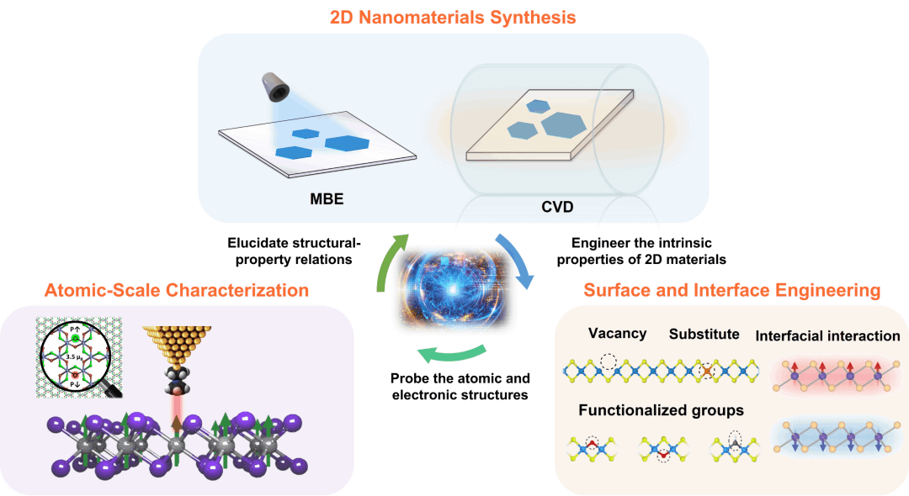

The Quantum Characterization Laboratory (QCL) at Westlake University is a research group led by Dr. Qiucheng Li in the School of Engineering. Our research focuses on probing the quantum properties of two-dimensional (2D) quantum materials using cryogenic scanning probe microscopy. Atomically thin 2D materials and their van der Waals (vdW) heterostructures offer a promising platform for realizing tunable quantum states and emergent quantum phenomena, such as long-range magnetic order and strong electronic correlations. We aim to synthesize, engineer, and characterize novel 2D quantum materials with atomic precision to unravel their structure-property relationships. Leveraging our unique in-house capabilities, our interdisciplinary team of material scientists, chemists, and physicists is dedicated to creating tailored 2D quantum systems for applications in nanotechnology, quantum information technology, and alternative energy. If you share our passion for exploring the 2D quantum realm, we warmly invite you to join us at the QCL to push the boundaries of this exciting field together.
"The atomically precise synthesis of 2D nanomaterials is the foundation for all subsequent science and engineering endeavors. We employ bottom-up synthesis strategies to create 2D materials from the atomic building blocks through both physical deposition and chemical reactions. Our lab is equipped with extensive materials growth capabilities, ensuring atomically precisely synthesis of high-quality 2D materials.
Molecular Beam Epitaxy (MBE)
MBE involves physical vapor deposition of atoms or molecules onto clean surfaces under ultrahigh vacuum (UHV, pressure < 10-9 mbar) conditions with precisely controlled fluxes. Our lab is equipped with UHV-MBE system coupled with scanning tunneling microscopy (STM), enabling us to analyze the atomic structures and electronic properties of 2D materials without exiting the UHV environment.
Chemical Vapor Deposition (CVD)
CVD involves decomposition and reaction of vapor-phase precursors (derived from solid, liquid, or gas sources) onto a growth substrate at elevated temperatures. Our lab is equipped with multiple CVD systems that provide access to diverse 2D materials and their vdW heterostructures. Additionally, we can conduct UHV-CVD directly within our STM and MBE preparation chambers.
The atomically thin nature of 2D materials implies that surface and interface effects are more important and oftentimes dominant in determining their quantum properties. We aim to precisely engineer the surfaces and interfaces of 2D materials, affording intricate control over their quantum states, electronic configurations, and coherent behaviors. For example, many 2D materials are prone to oxidization and irreversible degradation under ambient conditions, severely limiting their practical applications. Our research has demonstrated that covalent modification of 2D materials with tunable functional groups holds promise for tailoring the surface chemistry and significantly improving chemical stability. Moreover, the advent of vdW heterostructures has opened an entirely new highly tunable platform to directly engineer strongly correlated electronic states. The proximity effect at the vW interfaces, involving charge transfer and additional spin-exchange paths, is expected to enhance interlayer coupling and tailor their quantum properties.
We leverage and develop atomic-scale characterization techniques to unvel the structure-property relationships inherent in 2D materials, thereby refining our synthesis and engineering processes. We utilize a cryogenic UHV-STM to probe the atomic structures, defects, and functional groups, allowing us to correlate their presence with material properties. Additionally, our STM is equipped with a Plus AFM to provide complementary topographical characterization at the atomic level. Beyond our in-house instrumentation, the facilities at Westlake University feature a powerful UHV cluster system that integrates STM with angle-resolved photoemission spectroscopy (ARPES), X-ray photoelectron spectroscopy (XPS), and multiple molecular beam epitaxy (MBE) chambers, significantly enhancing our analytical capabilities.
Combing the three thrusts will correlate the atomic structure to the quantum properties, ultimately bridging the gap between fundamental studies and potential applications of 2D quantum materials for applications in quantum information science.